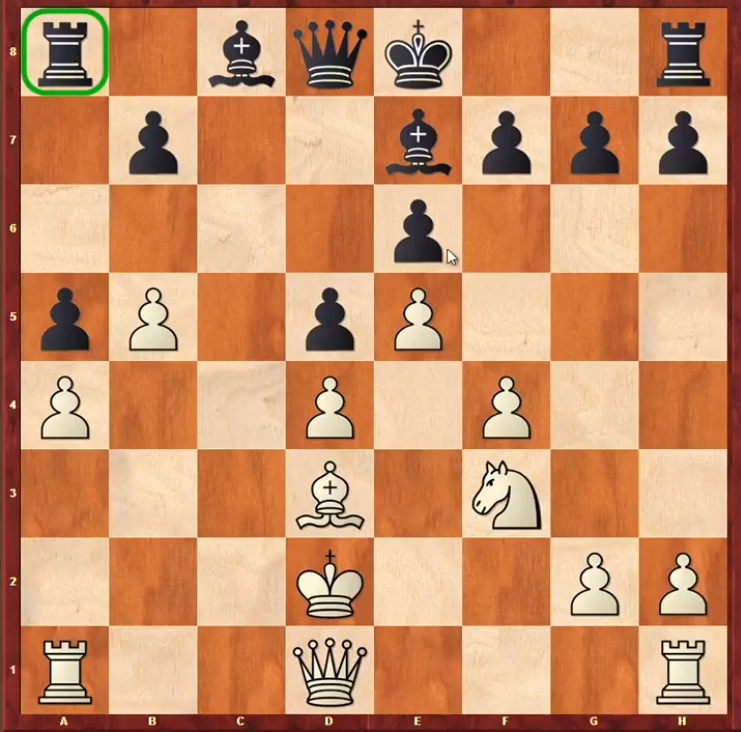

Programming A Chess AI
Stats -> The average person can read this 525 word page in 2 minutes.
A Fun Self Challenge
I really like programming things that improve as it runs, but programming self improving code can be a nightmare because the feedback loop tends to be quite large.
Usually when programming something, you click run and within a second or two you know if you need to modify the code, but with these kinds of programs, the code can take hours or days of running before you notice something is off.
The more you need the code to self improve, the longer it needs to run. Self improving code should be saved only for problems where you can’t reasonably code a complete solution. Solving games is complicated, tic tac toe being relatively easy to solve, chess being orders of magnitude harder and go being one of the hardest complete information games. Each new legal move makes the searching of potential moves exponentially more difficult.

“AI” code can help in these scenarios to help trim down the potential moves the code looks at to find great moves. The way this works is you have a neural network that looks at a single game state and have it predict the winner. Loop over all potential moves and pick the move that the neural net likes the best and repeat until the game ends. For training, this doesn’t work because the AI will have tendencies for picking the same series of moves over and over.
The solution is to pick moves based on how unlikely they are and how good they seem. The more a path is taken, force the AI to further avoid that path during training. This should allow a wider search of the game space.

Now, another trick game AI programmers can do is to split the training and the exploring into separate processes. The code can store games played into a large list and have half of the computer spend it’s resources updating that list with new games and the other half updating the neural net to better judge the outcomes of those games.
The code I wrote in rust works without that final trick, it just runs one part at a time, but it does keep a list of games played. This makes it easy to change how often it plays vs learns from those games. I also use the neat algorithm, which is not ideal because it’s a trial and error approach instead of a more usual neural net with back propagation.
Feel free to checkout the chess AI trainer which I wrote in rust based on some of the fundamentals found in an alpha go zero cheat sheet I found on the internet somewhere.
Hope you learned something or had fun! I know I did one of those…